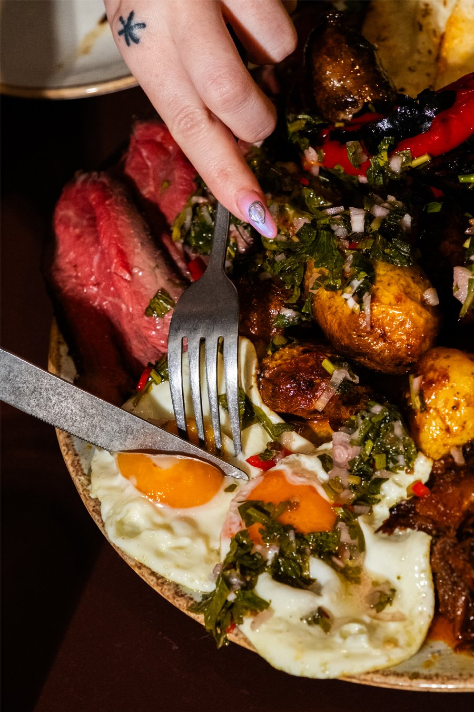

temper Restaurant: fire-cooked meats, bold flavours, open kitchens, tacos, roasts, brunch, and private hire – London’s ultimate dining experience.

Looking for the best food in London? Forget tiny plates and gimmicks. At temper, we do food differently — fire-cooked, butchered in-house, packed with flavour, and unapologetically bold.
This is where London’s best restaurants meet live-fire cooking, mezcal-fuelled menus, and chef-led energy. From flame-seared tacos to smoked rib-eye steaks, our dishes don’t whisper — they roar.
When it comes to food in London, it’s hard to beat a restaurant that cooks everything over open flames — in front of your face. At temper, we’ve made fire our trademark and flavour our mission.
We:
• Butcher all our meat in-house
• Cook every dish over live fire
• Serve tacos, steak, mezcal, and smoke with serious swagger
• Build menus that punch above their weight
• Deliver unforgettable dining with no pretence
From lunch to late night, we’re where London’s best flavours meet flame, craft, and chaos.
Soho – The OG Fire Pit
Hidden below Broadwick Street, temper Soho is dark, loud, and alive with energy. You’ll smell the wood smoke before you see the flame. It’s moody, meaty, and made for indulgent feasting.
– Tacos and Tequila
Our west-end hotspot puts tacos front and centre. Vibrant, punchy, and packed with fire-cooked Mexican edge, this is where spice meets smoke in the middle of the city.
– East London Heat
With exposed fire pits, whole cuts, and an open-plan kitchen, brings serious BBQ energy. Meats, mezcal, and music collide in the most East-London way possible.
London’s food scene is packed. But our dishes cut through the noise.
Standout Plates at temper:
• Smoked short rib with burnt chilli mole
• Aged beef taco trio with habanero crema
• Charred lamb skewers with citrus glaze
• Coal-roasted aubergine with chilli crunch
• Mezcal-braised pork belly with lime slaw
• House-aged steak with ember onions
These are flavours that stick. Dishes that leave a mark. You don’t forget your first bite at temper.
Every temper site puts the fire pit in the centre of the room. Why? Because we don’t hide what we do. It’s messy, primal, and absolutely delicious.
Our cooking is based on:
• Direct flame, slow smoke, hot embers
• Wood-fired grills, no shortcuts
• Craft butchery – aged, cut, and portioned in-house
• Spice, fat, acid, flame – the four horsemen of flavour
If you’re a London food lover, this is where your next obsession starts.
Not every meal has to be a blowout. At temper, you can eat London’s best food without needing a celebrity’s credit card.
We offer:
• Lunch set menus from £14
• Taco and tequila pairings
• Group feasting menus for up to 20 people
• Pre-theatre bites in
• Cocktail bundles and taco deals
Value and flavour in one big, smoky package.
“Incredible cuts, cooked to perfection. A meat-lover’s dream.”
“Best tacos in London. No contest.”
“Everything from the vibe to the service to the smoke was 10/10.”
Whether you’re a London foodie or a first-timer in the city, the reviews don’t lie. We’re not just one of the top restaurants in London — we’re a place people remember.
There are Michelin-star restaurants in London. Then there’s us.
temper isn’t white tablecloths and quiet corners. We serve food that shouts. We crank the music, sear the steak, and pour mezcal like water. It’s rough around the edges and proud of it.
Perfect for:
• Dates with flavour
• Celebrations that need noise
• Food tours with real heat
• Late-night bites with bold drinks
This is your insider guide to London’s top food destination.
Lunch – Set menus, express tacos, charred meats
Dinner – Smokehouse-style feasts with cocktails to match
Brunch – Bottomless, bold, and mezcal-soaked
Private Dining – Events with serious firepower
temper is built for all-day flavour. Whether you’ve got 30 minutes or three hours, we’ve got a menu that delivers.
London’s full of skyline bars and rooftop cafés. But at temper, the best view is inside — where the chefs slice, sear, smoke, and serve with real fire.
You’re not watching from the sidelines. You’re in the action.
We honour British food with edge:
• UK-reared meat, aged in-house
• Seasonal vegetables, fire-roasted
• Sauces built on smoke and spice
Forget traditional roasts. Think fire-blistered marrow, coal-grilled onions, and umami-drenched sides that take British cuisine somewhere new.
• We cook with live fire. No microwaves. No shortcuts.
• We butcher everything ourselves.
• We treat tacos like art and steak like religion.
• We make everything in-house — from sauces to pickles to tortillas.
There’s no “safe” menu at temper. Everything’s got punch, flame, and intent.
Whether you live here or you’re ticking off a London food tour, temper should be your next stop.
We’ve hosted:
• Celebs (who we won’t name)
• Food writers
• First dates
• Massive birthdays
• Hungover brunch groups
We serve them all the same way: hot, bold, and without compromise.
Your Next Bite of the Best Food in London Starts Here
You’ve tried the rest. Now taste the fire. At temper, we’re not just another restaurant — we’re a flame-fuelled experience, a celebration of meat, smoke, and bold flavour.
Book now. Come hungry. Leave full and fired up.
Planning a visit? Explore our London restaurants and signature experiences: